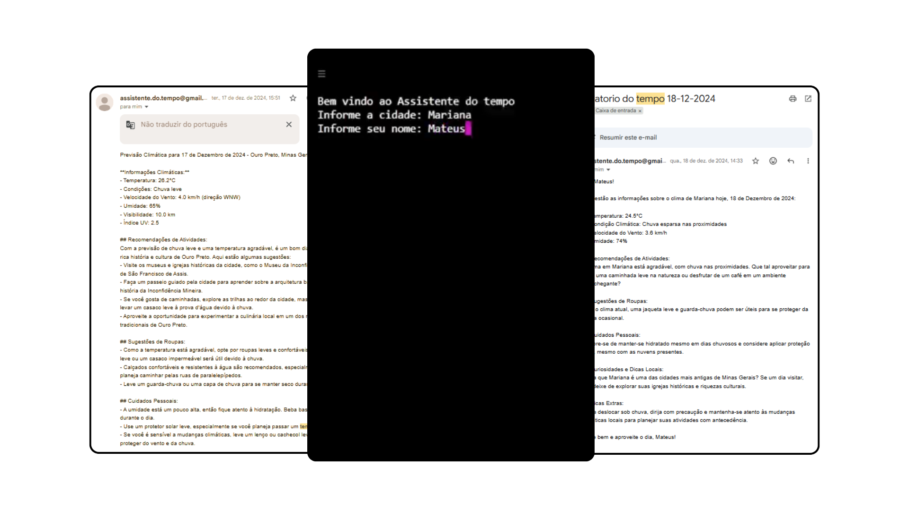

O projeto consiste em um assistente de clima desenvolvido em Python, criado com o objetivo de consolidar conhecimentos em integração de APIs e documentar minha evolução como programador. A aplicação foi pensada como uma solução prática, unindo automação, consumo de dados externos e geração de respostas inteligentes.
O sistema funciona a partir da escolha de uma cidade pelo usuário. Com base nessa informação, uma API de clima é utilizada para coletar dados detalhados sobre as condições meteorológicas locais, como temperatura, previsão e outras variáveis relevantes. Esses dados servem como base para a próxima etapa do processamento.

As informações climáticas são enviadas à API do ChatGPT juntamente com um prompt personalizado, permitindo a geração de um relatório que combina dados objetivos com dicas úteis e curiosidades relacionadas à região. Dessa forma, o retorno ao usuário vai além de uma simples previsão do tempo, oferecendo uma resposta mais contextualizada e informativa.
O projeto também conta com a funcionalidade de envio do relatório por e-mail, utilizando o protocolo SMTP com autenticação segura via Gmail. Durante o desenvolvimento, foram reforçados conceitos como integração de múltiplas APIs, automação de envio de e-mails e boas práticas de programação, resultando em uma aplicação mais organizada, escalável e bem documentada.